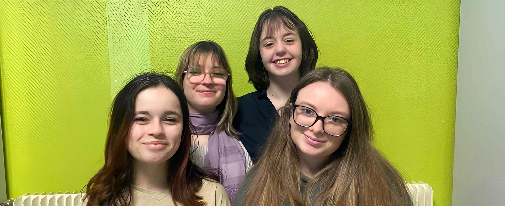
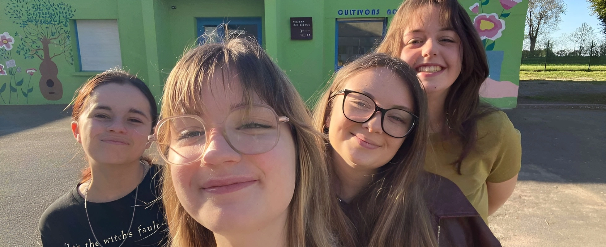
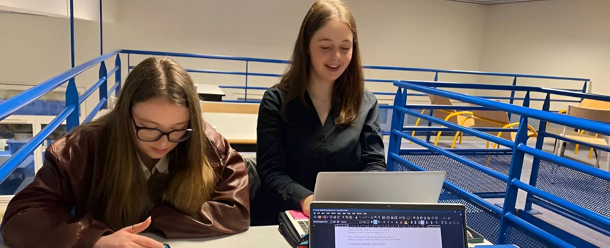
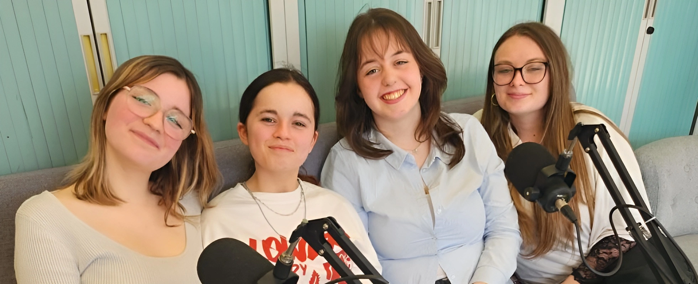
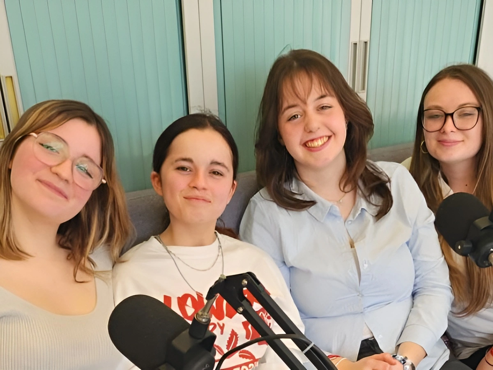
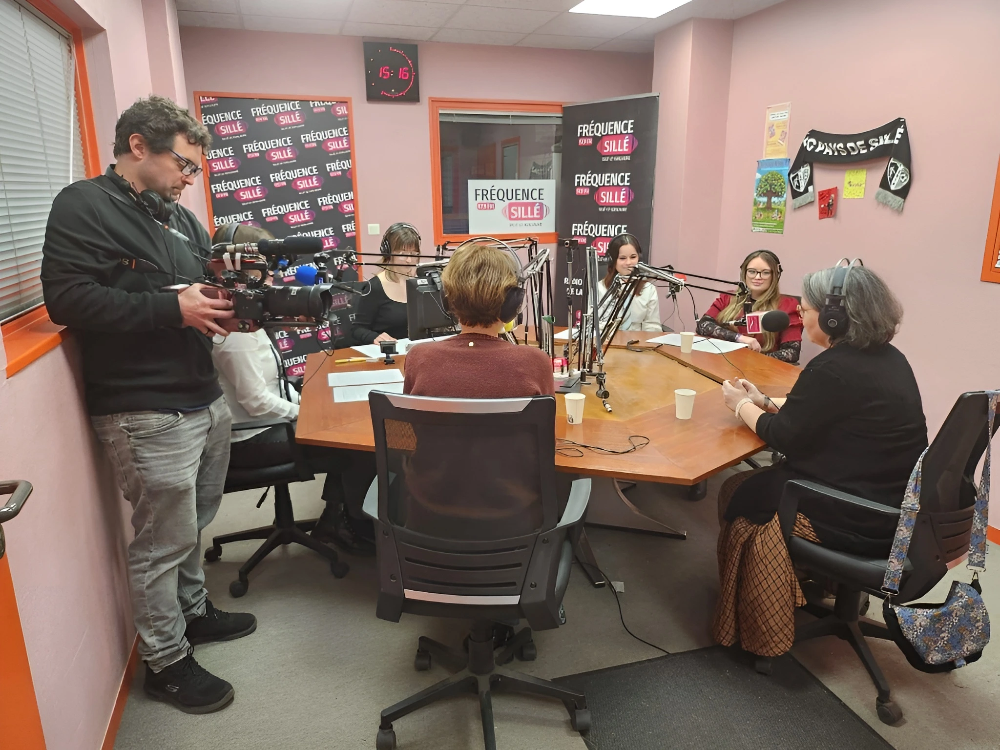

Association pour la santé mentale des jeunes
Prévenir, informer et crédibiliser la santé mentale des jeunes en milieu scolaire. Une association créée par des jeunes, pour des jeunes.




Chiffres clés
de jeunes présentent au moins un trouble psychique en France
Porta Bonete & Vautard, La santé mentale en France, 2022
des lycéens présentent un risque important de dépression
Santé publique France, 2024
des élèves de collèges et lycées présentent des plaintes psychologiques hebdomadaires
Santé publique France, 2024
Le suicide est la 2ème cause de mortalité chez les 15-24 ans, derrière les accidents de la route
Porta Bonete & Vautard, 2022
Les données sont alarmantes. Les aides mises en place au niveau national sont honorables, mais nous croyons que des actions sur le terrain, menées par la jeunesse, seront la pièce manquante du puzzle complexe qu'est la santé mentale.
— Ados, Fardeaux, RenouveauAgenda
L'association sera présente sur le journal télévisé de France 5 pour parler de la santé mentale des jeunes.
Retrouvez-nous au village de la santé à Conlie pour une journée dédiée au bien-être et à la santé.
Participation à la journée mondiale de la santé mentale pour sensibiliser le grand public.
Ce que nous faisons
Notre émission mensuelle en collaboration avec la radio associative Fréquence Sillé, basée en milieu scolaire. Chaque épisode est composé de plusieurs rubriques et d'un micro-trottoir pré-enregistré, en compagnie des membres du bureau : Camille, Arwen, Chloé et Lola.
Diffusée chaque lundi à 13h sur la radio Fréquence Sillé, sur leur site web et sur Spotify. Des invités spécialistes de santé et professeurs participent à chaque épisode.
Site Fréquence Sillé →Nous postons régulièrement sur les réseaux sociaux afin de sensibiliser à propos de la santé mentale des jeunes. Infographies, témoignages, ressources et actualités : suivez-nous pour ne rien manquer !
Instagram → Facebook →Chaque mois, notre émission explore un nouveau thème lié à la santé mentale des jeunes. Spécialistes de santé, professeurs, et jeunes témoins : nos épisodes vous invitent à comprendre et agir.
À propos de nous
Notre association a été créée par des élèves de Première Générale, touché·e·s en premier lieu par la pression scolaire et la peur du futur, notamment post-bac.
Le but principal de l'association est de prévenir, d'informer, et de crédibiliser le sujet de la santé mentale chez les jeunes en milieu scolaire.
"J'ai été diagnostiquée en Janvier 2025 avec un syndrome anxio-dépressif lié à ma scolarité. J'ai été contrainte de quitter mon lycée idéal pour retourner dans mon lycée de secteur. Regagner un bien-être mental a été une véritable épreuve pour moi ainsi que pour mes proches. Un an plus tard, je crée avec mes ami·e·s Ados, Fardeaux, Renouveau pour prouver que après la pluie, vient le beau temps."— Lola, présidente de l'association
Prévenir · Informer · Crédibiliser la santé mentale en milieu scolaire.

Premier épisode de l'émission « Des ados, la santé mentale et une radio ! » sur Fréquence Sillé (97.9 FM)

Deuxième épisode de l'émission « Des ados, la santé mentale et une radio ! » sur Fréquence Sillé (97.9 FM)
Nous rejoindre
Une question, une envie de participer ou de collaborer ? Nous serons ravies de vous répondre.